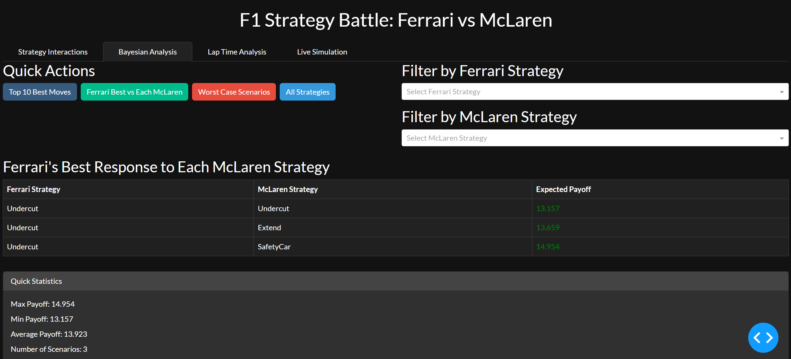

Blended Bayesian game theory with real F1 telemetry from FastF1 API to simulate and visualize pit stop strategies, enabling 36+ scenario analyses via an interactive dashboard with payoff matrices, strategy flows, and live race simulations

The Multi-Agent Simulation of Pit Stop Strategy Using Game Theory is a sophisticated strategic modeling tool that blends Bayesian game theory with agent-based simulation to analyze and optimize Formula 1 pit stop strategies. Conceived from the high-stakes environment of the 2024 Spanish Grand Prix, the project integrates real telemetry data—lap times, tire compounds, and pit events—via the FastF1 API to simulate decision-making between two competing teams, Ferrari and McLaren. By embedding these competitive interactions into a probabilistic multi-agent framework, the project reimagines pit strategy not as a deterministic decision, but as a complex, adaptive game with asymmetric information and evolving utilities
Technically, the simulation architecture is modular and methodologically rigorous. At its core, Python scripts such as agents.py, payoff_matrix.py, and payoff_matrix.py encapsulate the rational decision logic of teams through Bayesian reasoning and matrix game analysis.
The race evolution is handled by simulator.py, which governs lap progression and real-time agent interactions, while the FastF1-powered fast1_data_loader.py ensures real-world fidelity.
The project culminates in a dynamic, browser-based HTML dashboard featuring interactive components: a Bayesian payoff matrix, a Sankey flow visualization of strategic dominance, lap time degradation charts, and a live race simulation controller. These elements enable users to explore over 36 unique strategy permutations, identify Nash equilibriums, and assess performance deltas in real time
-The project’s key outcomes highlight both strategic insights and analytical depth
-Users can instantly simulate what-if scenarios— such as the advantage of undercutting on Lap 11 versus pitting under a safety car— and observe their outcomes through color-coded payoff matrices and animated race flows
-Notably, the tool identifies optimal responses to rival moves, quantifies expected gains (e.g., Ferrari gains +3.1s when undercutting versus McLaren’s Lap 13 pit), and exposes risk-dominant or regret-prone decisions
-Visualizations such as the Lap Time Analyzer reveal tire
degradation trends and performance inflections, while the Sankey
diagram interprets advantage transfer across strategic states
By combining rigorous modeling with intuitive visualization, the project not only delivers a novel analytical platform for motorsport strategy but also sets a foundational framework for future extensions into Monte Carlo simulations, weather-based modeling, and multi-team decision environments